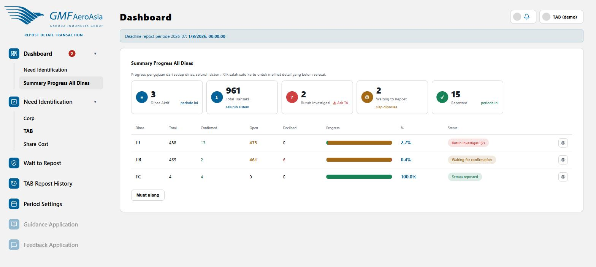

| Label Status | Artinya |
|---|---|
| 🔴 Butuh Investigasi (n) | Prioritas tertinggi — ada baris "Ask TA" milik dinas ini yang perlu di-assign TAB |
| 🟠 Waiting for confirmation | Masih ada transaksi Pending menunggu keputusan dinas target |
| 🟡 Waiting to repost | Semua sudah Confirmed, tinggal menunggu TAB posting manual ke SAP |
| 🟢 Semua reposted | Tuntas — semua transaksi dinas ini sudah diposting ke SAP |
Klik ikon mata di ujung kanan baris untuk melihat breakdown pasangan dinas milik dinas tersebut.